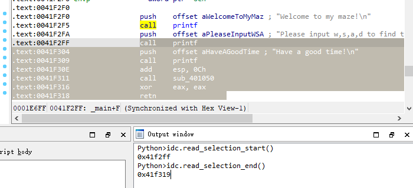
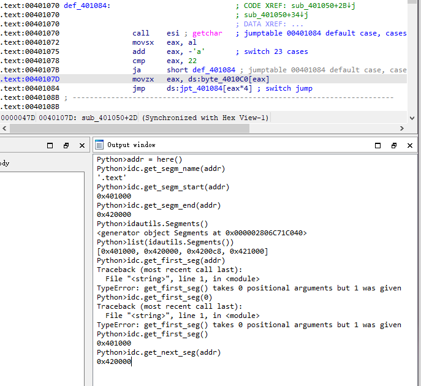
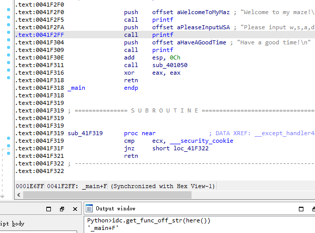
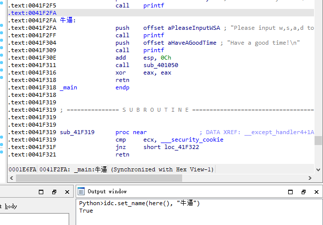
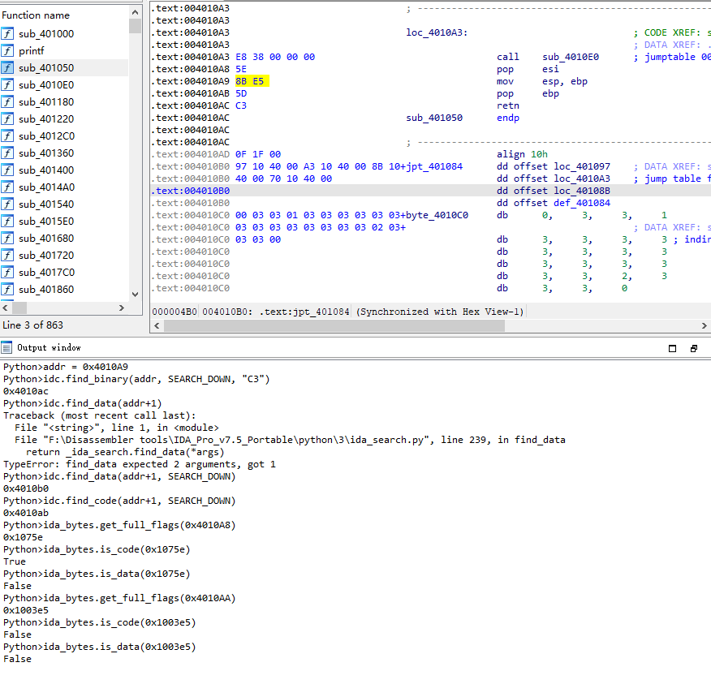

IDAPython 学习笔记
IDAPython 学习笔记
比着大佬的博客系统的学习下IDAPython,做下笔记，供自己以后查询
https://www.cnblogs.com/iBinary/p/14642662.html
https://www.cnblogs.com/iBinary/p/14672540.html
https://www.cnblogs.com/iBinary/p/14801928.html
1、IDAPython参考学习文档
IDAPython官方函数文档： https://www.hex-rays.com/wp-content/static/products/ida/support/idapython_docs/
IDA版本变化后IDAPython对应差异函数查询：https://www.hex-rays.com/products/ida/support/ida74_idapython_no_bc695_porting_guide.shtml
2、IDA中获取界面中地址函数
| 作用 | 老版函数 | 新版函数 |
|---|---|---|
| 获取当前指令地址（光标点击的那个，灰色阴影那行） | idc.ScreenEA() | idc.get_screen_ea() |
| 整个IDA中的最小地址 | idc.MinEA() idc.StartEA() idc.BeginEA() | ida_ida.inf_get_min_ea() |
| 整个IDA中的最大地址（其实是最大地址 + 1） | idc.MaxEA() | ida_ida.inf_get_max_ea() |
| 光标选择块的开始地址 | idc.SelStart() | idc.read_selection_start() |
| 光标选择块的结束地址（结束地址 + 1） | idc.SelEnd() | idc.read_selection_end() |

3、IDAPython的数值获取及打补丁操作
获取数据
在IDA中想要获取某个地址处的数据可以采用以下函数
| 作用 | 老版函数 | 新版函数 |
|---|---|---|
| 获取BYTES类型 | ida_bytes.get_many_bytes(addr, len) | ida_bytes.get_bytes(addr, len) |
| 获取BYTE类型 | idc.Byte(addr) | idc.get_wide_byte(addr) |
| 获取WORD类型 | idc.Word(addr) | idc.get_wide_word(addr) |
| 获取DWORD类型 | idc.Dword(addr) | idc.get_wide_dword(addr) |
| 获取QWORD类型 | idc.Qword(addr) | idc.get_qword(addr) |
Patch打补丁
| 作用 | 老版函数 | 新版函数 |
|---|---|---|
| 打补丁BYTE | idc.PatchByte(addr,value) | ida_bytes.patch_byte(addr,value) |
| 打补丁WORD | idc.PatchWord(addr,value) | ida_bytes.patch_word(addr,value) |
| 打补丁DWORD | idc.PatchDword(addr,value) | ida_bytes.patch_dword(addr,value) |
| 打补丁QWORD | idc.PatchQword(addr,value) | ida_bytes.patch_qword(addr,value) |
4、汇编相关指令操作
| 作用 | 老版函数 | 新版函数 |
|---|---|---|
| 获取地址处的汇编语句 | idc.GetDisasm(addr) | 无 |
| 更高级的获取.带有标志. 一般是给一个0 | idc.GetDisasmEx(addr,flags) | idc.generate_disasm_line(addr,flags) |
| 获取指定位置的操作数mov ebp, esp. ebp索引是0，esp索引是1 | idc.GetOpnd(addr,index) | idc.print_operand(addr,index) |
| 获取地址处汇编指令的操作指令 mov ebp,esp 获取mov | idc.GetMnem(addr) | idc.print_insn_mnem(addr) |
| 获取基地址 | idaapi.get_imagebase() | 无 |
| 获取操作数的类型 | idc.GetOpType(ea,index) | idc.get_operand_type(addr,index) |
| call printf； 调用此函数，index填0的话，返回的就是printf的地址。 and esp, 0FFFFFFF8h；index填1的话，返回的就是0xfffffff8 | idc.GetOperandValue(addr,index) | get_operand_value(addr,index) |
| 获取下一行汇编的地址 | idc.NextHead | idc.next_head(ea) |
| 获取上一行汇编的地址 | idc.PrevHead | idc.PrevHead(ea) |

5、段相关操作
| 作用 | 老版函数 | 新版函数 |
|---|---|---|
| 获取段的名字 | idc.SegName(addr) | idc.get_segm_name(addr) |
| 获取段的开始地址 | idc.SegStart(addr) | idc.get_segm_start(addr) |
| 获取段的结束地址 | idc.SegEnd(addr) | idc.get_segm_end(addr) |
| 返回一个列表记录所有段的地址 | idautils.Segments() | 无 |
| 获取第一个段 | idc.FirstSeg() | idc.get_first_seg() |
| 获取下一个段 参数是当前段的任意地址 返回的是下一个段的地址 | idc.NextSeg(addr) | idc.get_next_seg(addr) |

6、函数相关操作
| 作用 | 老版函数 | 新版函数 |
|---|---|---|
| 获取指定地址之间的所有函数 | Functions(startaddr,endaddr) | 无 |
| 获取指定地址的函数名 | idc.GetFunctionName(addr) | idc.get_func_name(addr) |
| 获取函数的注释 | idc.GetFunctionCmt | get_func_cmt(ea, repeatable) 1是地址 2是0或1 1是获取重复注释 0是获取常规注释 |
| 设置函数注释 | idc.SetFunctionCmt | set_func_cmt(ea, cmt, repeatable) |
| 弹框让用户选择函数，返回的是函数的地址 | idc.ChooseFunction(title) | idc.choose_func(title) |
| 返回: addr 距离函数的偏移形式 | idc.GetFuncOffset(addr) | idc.get_func_off_str(addr) |
| 寻找函数结尾,如果函数存在则返回结尾地址,否则返回-1 | idc.FindFuncEnd(addr) | idc.find_func_end(addr) |
| 设置函数结尾 | ida_funcs.func_setstart(addr,newstartaddr) | ida_funcs.set_func_start(addr, newstart) |
| 设置函数开头 | ida_funcs.func_setstart(addr,newstartaddr) | ida_funcs.set_func_start(addr, newstart) |
| 设置地址处的名字 | idc.MakeName(addr, name) 与之同名了还有Ex函数 | idc.set_name(ea, name, SN_CHECK) Ex函数也使用set_name |
| 获取前一个函数的地址 | idc.PrevFunction | idc.get_prev_func(ea) |
| 获取下一个函数的地址 | idc.NextFunction | idc.get_next_func |


7、搜索功能
搜索
| 作用 | 老版函数 | 新版函数 |
|---|---|---|
| 查找二进制找到返回地址没找到返回-1(BADADDR) | idc.FindBinary | idc.find_binary(ea, flag, searchstr, radix=16, from_bc695=False) |
| 返回data的地址，而不是code（注意不是指具体的数据，而是指的data类型） | idc.FindData | idc.find_data 或者ida_search.find_data |
| 返回code的地址，而不是data | idc.FindCode | idc.find_code 可以使用 ida_search.find_code 也可以使用 |
| 跳转到ea位置 | idc.Jump | ida_kernwin.jumpto(ea) |
校验
数据校验函数is_xxxx传入的都是flag，因为需要先获取某个地址处的flag，然后再将获取的flag传入is_xxxx
| 作用 | 老版函数 | 新版函数 |
|---|---|---|
| 获取标志 | idc.GetFlags(ea) | ida_bytes.get_full_flags(ea) |
| 判断是否是代码，传入标志，根据标志返回True or False | idc.isCode(f) | ida_bytes.is_code(f) |
| 同上 只不过是判断是否是数据 | idc.isData(f) | ida_bytes.is_data(f) |

本博客所有文章除特别声明外，均采用 CC BY-NC-SA 4.0 许可协议。转载请注明来自 zsky's Blog！
 微信
微信 支付宝
支付宝
评论